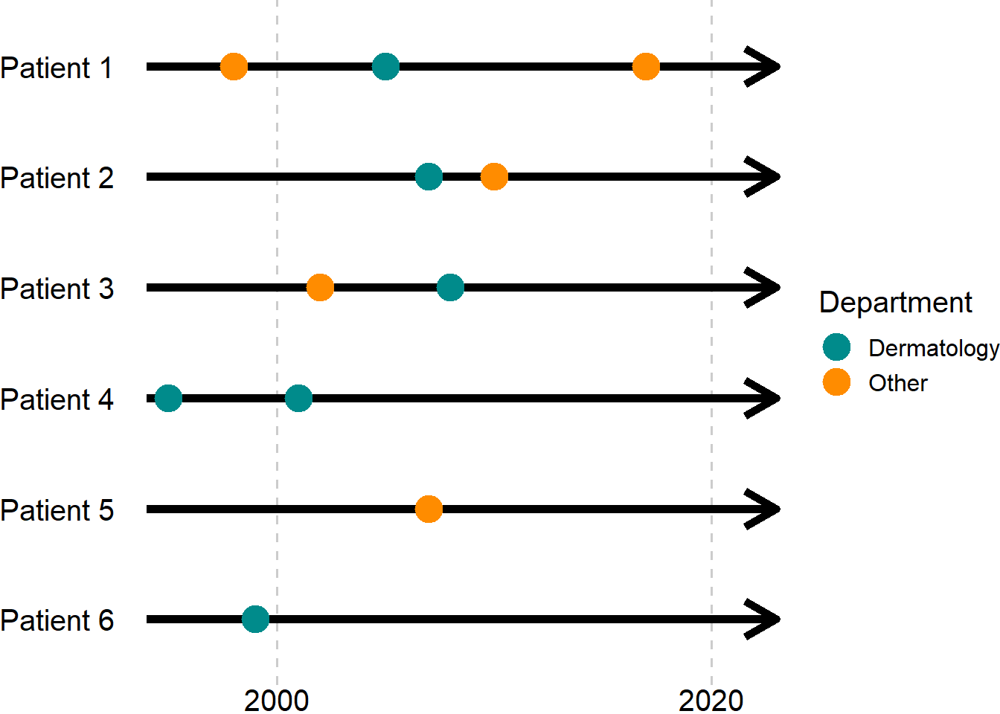

| Log of changes | ||
| Date | Change | Reason |
|---|---|---|
| 20/06/2023 | NA (First version) | NA |
| 08/12/2023 | HRs estimated by Cox regression replaced by RRs computed using strata-specific risks estimated by the Aalen-Johansen estimator | Non-proportional hazards |
| 31/03/2024 | Sensitivity analysis added where CKD is defined by eGFR persistently below 60 mL/min/1.73m² for at least 90 days | Reviewer 2 was critical of our initial definition of CKD. We maintain our original definition for primary analyses. |
General thoughts
1 Motivation
The purpose of a statistical analysis plan (SAP) - which will often also contain a (partial) data management plan - is to improve the quality of studies. The SAP will often be based on (or an appendix to) a protocol where the overall outline of a study is presented with fewer technical details.
1.1 The research question - what is the estimand?
Writing a detailed SAP forces the researcher/study group to think clearly about what the aim of the study is (which estimand1 needs to be estimated?), and how to achieve this aim (which estimator can provide the best estimate?). Possibly, the group will come to the conclusion that a reliable estimate cannot be made with the data at hand, in which case they can abandon the study and save themselves (along with reviewers, editors, taxpayers, and other innocent bystanders) a lot of time and resources which can then be spent on something fruitful.

Speaking from experience, it is not uncommon that a researcher wants an answer to a question that is so vague that several different analyses could be carried out, and all be said to provide a relevant answer to the overall question.
A question like “What is the occurrence of dementia in individuals with chronic kidney disease (CKD)?” can be a good overall question, but there is no unique answer to that because the question is not specific. It could be interpreted in several ways:
- Among people with CKD living in Denmark today, how large a proportion also have dementia?
- This question could be answered using a cross sectional design.
- Among people who lived with CKD in Denmark 10 years ago how large a proportion have had dementia since?
- This question could be answered with a cohort design, using appropriate time-to-event methods to take censoring and the competing risk of death into account.
- Among people with incident CKD in the period 2010-2025 without prevalent dementia at the time of CKD, how large a proportion have developed dementia since?
- Again, a cohort design with time-to-event methods could be used to answer this question, but notice that it will be a different cohort compared to the above.
Even these questions are not completely clear. The first question interprets “occurrence” as “prevalence”, while the second and third aim to provide estimates of an incompletely defined “risk”, seeing that risk strictly speaking only makes sense if a time frame is also specified, e.g., 10-year risk.
If the question is not clear before the answer is sought, there is a significant risk of p-hacking2 or HARKing.3
1.2 Definitions and data
Once it is clear what the specific research question is, i.e., what the estimand is, it is also relevant to consider how the population and the individual variables are defined.
Continuing with the example of CKD and dementia, there will be several ways to identify these conditions from registries. Therefore, even if a SAP has been written in great detail, i.e., considerations on how to handle missing data are made, estimation methods described, table shells ready to be populated etc., it is still important to also describe how a population with “incident CKD”, say, can be identified from registries. Likewise, it needs to be specified how “dementia” and any other variable necessary for the analyses should be defined.
Defining populations and variables is data management and not statistical analyses per se. That does not make specification of these aspects less important, this is just to point out that a data management plan is also essential in most registry-based studies.
1.3 Two documents or one?
The data management plan and the SAP can often be written as one coherent document with no explicit distinction between the two parts. However, it can still be relevant to keep in mind that data management and statistical analyses are in principle separate parts/phases of a study. In international/multicenter studies, it is generally advisable to use a common data model, so that analytic scripts (scripts needed to carry out statistical analyses as specified in the SAP) can be shared, ensuring the same methods are applied at all centers. To facilitate this, each center must provide a data set that complies with certain rules, i.e., variables must have specific names, types, formats, etc. as specified by the coordinating center.
However, data management will generally have to differ between centers at some initial level. At the most low-practical level, registries and their variables will have different names and structures. There can also be qualitative differences, e.g., primary vs. secondary care data, granularity of diagnosis/procedure/… codes, or precision of time variables,4 all of which may require different approaches between centers. The point being that in multicenter studies each site probably needs to have its own data management plan, whereas statistical analyses should follow common scripts aligning to a shared SAP.
In the following, it will be assumed that the data management plan is incorporated into the SAP.
2 Elements of the SAP
This section lists elements you might include in a SAP. Not everything will be relevant for all projects, so do not feel obliged to include something about each of these topics.
2.1 Sanity checks
At various places in the SAP, you might want to specify milestones at which to pause the analyses and look at the results so far. E.g., once the population is constructed, it might be sensible to check its size before moving on to defining variables. Once the (baseline) variables are defined, you might want to see the descriptive table(s) before moving on to the outcome analyses. Looking at the overall risk (across exposure groups) before making a comparison between exposure groups can also be considered.
These sanity check may enable you to correct mistakes before they are consequential, by reducing the risk of rerunning the analyses after (the first version of) the results of primary interest are known. Rerunning the analyses after the results are known, always comes with the uncertainty as to whether you rerun because the results are not to your satisfaction, or because you could genuinely come with a less biased estimate with the available data. Whenever you rerun analyses you lose credibility. If the results in themselves lead you to rerun the analyses until you get what you want, you are on shaky ground.5 Therefore,
- if the population is much smaller or larger than expected,
- if the exposure groups are too dissimilar for sensible comparisons, or
- if the overall risk looks completely off,
you can (try to) find ways to correct these aspects6 before knowing the primary result, and thus you prevent yourself from p-hacking.7
The sanity checks should not necessarily have a section of their own in the SAP. Instead, they might be included at the places in the document where they occur naturally. E.g., a sanity check for population size may be put in the section defining the study population, and a sanity check for population characteristics might be placed where the descriptive analyses are specified.
2.2 Log of changes
Near the start of the SAP there should be a log of changes, documenting any changes made after the data management or analyses are started. The log should contain dates where changes are made, what the changes are, and reasons for the changes. This will both serve as a reminder within the group of why decisions were made, and if the statistician is replaced the new statistician will be able to get a quick overview of the history of the project (and find reasons for deviations between what is actually done, and what was specified in the protocol).8
2.3 Background and aims / objectives
A brief description of why the study is important, and what the aims or objectives are.
Consider who the reader is. If this is for a statistician to implement, 2 pages of biology, chemistry and/or anatomy are not helpful. The point is not to copy everything from the protocol (if one exists), but to provide the necessary context for the analyses.
2.4 Sample size
In observational (registry-based) studies, sample size/power calculations are irrelevant as they are beyond the control of the researcher. However, it is still relevant to consider how large a population can be expected. The statistician might not realize before looking at the data, that the population should be counted in tens rather that tens of thousands, in which case all the fancy methods that have been planned might not be possible. If the population is expected to be small (whatever that means), this should be clear to the ones planning the analyses, so they can tell9 you what is feasible and what is not.
2.5 Miscellaneous methods
Likely, there are several relevant pieces of information which are rather matter-of-fact in nature and need no further explanation:
- A list of registries to be used.
- Study-, recruitment-, washout-, … periods: if these are specified exactly once in the document, they only need to be changed once if they are revised while conducting the study.
- Time: how long is a month (e.g., 28, 30 or 30.5 days) and/or a year (e.g., 360, 365 or 365.25 days), if these are relevant units of time. Consider if a year should be the same as 12 months if both units are used in the project. Consider avoiding having both months and years as time units in the same project.
- Exposure groups: If there is an exposure/intervention/… and a control/comparison/reference… group, consider specifying these. E.g., the exposure group is SGLT2i-users and the control group is GLP-1RA-users.
- If the independent variable of primary interest (the “exposure”) is continuous, consider specifying the reference value. E.g., when comparing risk of dementia for different eGFR-values, a value of 75 mL/min/1.73m2 could be used as the reference.
2.6 Study population and index date
Specify step-by-step how the study population should be derived from the raw registry data. This will often require defining an index date from raw data (make sure it is clear what the index date is), and then a series of in- and exclusion criteria to be applied on this index date.10
Prepare a figure shell for a flowchart, and make sure the order of the criteria in the figure aligns with the order the criteria are listed in the text. Sometimes,11 it can be relevant to leave out some steps used to go from raw data to an index date from the flowchart. However, all exclusion criteria that are applied subsequent to defining the index date should be included in the flowchart.
2.7 Variables
Depending on the study design, different types of variables are necessary to define. A table of codes to be used for the individual variable should always be provided. This table can be a separate file or an appendix within the same document. (See also Section 2.11 below.)
Some variables will likely have different roles, and it might be relevant to have separate paragraphs outlining (as relevant):
- how different levels of the exposure variable will be defined,
- how the outcome is defined,
- if time-to-event-data; list competing and censoring events,
- other covariates to be reported.
Note that rather than listing all variables in the text, it can be advantageous to point to a table shell (typically for Table 1 describing baseline characteristics), and state that these are the covariates to be included.
2.8 Statistical analyses
This is the key element of the statistical part of the SAP.
Some aspects need little explanation. E.g., populating the table shell for Table 1 with baseline characteristics (in generic studies), does not generally require any particular explanation. It might be relevant to explicitly state that continuous variables (except calendar time) will be reported by their median and interquartile interval (Q1-Q3); that for dichotomous variables only one level (e.g., only the number of individuals with heart failure, not those without) will be reported, while for multilevel categorical variables, all levels will be reported.
The analyses need to be done should be specified. Things to consider:
- which type of (regression) model, if any, should be used,
- how should variables be included into the models (e.g., continuous variables can be included linearly, as splines, or using some other transformation),
- how should assumptions be assessed, and what should be done if they do not hold,
- which non-parametric methods (Kaplan-Meier, Aalen-Johansen, …) should be used,
- how should missing data be handled (this can be a section on its own),
- how will uncertainty be estimated if it cannot simply be extracted from standard output (e.g., bootstrapping),
- sensitivity- and subgroup analyses should have their own sections, but questionable assumptions in the main analyses which will be challenged in sensitivity analyses could be mentioned here,
- which software packages to use (R, SAS, STATA, …).
To reduce the risk of p-hacking, it can be a good idea to pre-specify interim results to evaluate before moving on. See Section 2.1.
2.8.1 Missing data
If missing data are expected it will generally be a good idea to write something about this in advance. Not just how to handle missing data, but also which variables are expected to contain missing data and to what extent. Knowing these numbers, will make it easier for the statistician to have an opinion on the feasibility of the study and methods.
2.8.2 Stratified analyses
Specify if the analyses should be repeated within strata of some variables. Also specify if the results should be compared across strata, i.e., if effect-heterogeneity is assessed in some formal way, e.g., by estimating a parameter for an interaction term, with eyeballing being the implicit alternative.
2.8.3 Sensitivity analyses including subgroup analyses
It might be necessary to run bias analyses to handle, e.g., unmeasured confounding or selection bias. These should be mentioned here. Furthermore, having gotten this far, surely, some arbitrary choices will have been made, and the impact of some of these might be relevant to consider in sensitivity analyses. Examples could be
- use of secondary diagnoses for outcome identification,
- length of follow-up,
- washout- or grace periods,
- recruitment period,
- lookback period for variables,
- in- or exclusion of specific patient groups.
If residual confounding is a concern, restriction to specific subgroups can be used.12 E.g., if obesity, alcohol consumption, smoking or other variables that are hard to measure are important confounders, an analysis restricted to individuals who are known or presumed to be similar with respect to these variables (have a record compatible with obesity, alcoholism, COPD, etc.) may be important to run.13
Splitting and reanalyzing the population on calendar time can be relevant. Perhaps the demographics of the population, or the indication of a treatment changes over time, introducing a shift in the confounding pattern. However, calendar time in itself is generally hard to interpret as an effect modifier. At best it is a proxy for some other variable. Therefore calendar time stratification arguably belongs under subgroup (sensitivity) analyses rather than stratified analyses.
2.9 Table shells
Make a set of tables that are empty but otherwise ready to be published. There should a table shell for each table to be included in the manuscript or supplementary materials of the publication.
2.10 Figure shells
As for table shells, there should be a specification of each figure to be included in the publication. Remember to make a figure shell for the flow chart!
It is generally harder to make shells for figures than for tables, so consider copying/linking to figures from other publications that can be used as templates. Specify axis-labels, colors etc. if they need to be specific.14
2.11 Coding table
Provide all (diagnosis/procedure/ATC/SNOMED/NPU/…) codes needed to define the study population, exposure, outcome, and covariates, in a structured manner. The coding table can be a separate file (e.g., a spreadsheet) or part of the SAP. Make it easy to copy/import codes from the coding table to analytic scripts so they do not have to be transcribed manually.
Columns to include in the coding table could be:
- explicit variable names15 (typically, these are irrelevant unless you want to annoy your statistical programmer, however, when using a common data model across sites they are essential),
- informal variable names,16
- data source from which the codes are pulled, e.g., the Danish National Patient Registry (DNPR),
- the actual codes to be used, e.g., DN18,
- patient- and diagnosis type (applicable to Danish National Patient Registry); in-, out-, ER-patients, primary or secondary diagnoses,
- lookback from index date,
- notes on issues that are relevant for a specific variable that does not warrant a column in it self. E.g., thresholds for biomarkers defining conditions like CKD (eGFR) or type 2 diabetes mellitus (HbA1c); or that a diagnosis code for mycosis fungoides must be made a department of dermatology to be included.
Further structure can be added as in Table 2 where variables are sorted by their role (exposure, in-/exclusion, outcomes, etc.). Note that seemingly similar variables can be defined differently depending on their purpose at different stages in the study. In Table 2, specific algorithms are used to define plague and cholera as outcomes, whereas sensitive algorithms are used for exclusion criteria.
| Coding table | ||||||
| Variable | Data source | Codes | Patient type | Diagnosis types | Lookback | Notes |
|---|---|---|---|---|---|---|
| Exposure | Prescription registry | NA | NA | NA | ||
| SGLT2i | ||||||
| GLP-1RA | Exclude brand names Saxenda and Wegovy | |||||
| In-/exclusion | ||||||
| T2DM/Glucose lowering drugs | Prescription registry | NA | NA | 1 year | ||
| T2DM/HbA1c | Laboratory registry | NA | NA | 3 years | Any HbA1c > … indicates T2DM | |
| T2DM/diagnoses | Patient registry | All | Primary, secondary | 10 years | ||
| Recent plague or Cholera | Patient registry | All | Primary, secondary | 90 days | ||
| … | ||||||
| Outcomes | Patient registry | Inpatient | Primary | Only at a department of infectious diseases | ||
| Plague | ||||||
| Cholera | ||||||
| Comorbidities | ||||||
| … | ||||||
| Comedication | ||||||
| … | ||||||
| Biomarkers | ||||||
| … | ||||||
2.12 References
List of literature referenced in the SAP
3 Pitfalls to avoid
- Avoid repetitions.
- Whenever possible specify things exactly once, then there is exactly one place to change this when revising. This means that the statistician/statistical programmer does not accidentally read the recruitment period the one place you overlooked when revising.
- Do not write codes from the coding table in the text, it serves no purpose when it is also specified in a coding table (see previous point about repetitions).
- Avoid circular reasoning/definitions. It can be necessary to refer to a later section of the SAP, but make sure that this later section does not point back, so that in effect, the index date is defined as the date of the index date, or similar.
4 Simple tip for specifying the order of inclusion-/exclusion criteria
Draw timelines of hypothetical patients’ records in registries. How might records of various conditions, relative to each other and the recruitment period, affect who gets in- and excluded? Who would you want to include and who not? How can you set up the order of in- and exclusion criteria to obtain the desired study population? Of particular importance is the point in your inclusion-/exclusion criteria ordering, where you define the index date. Once the index date is set, it is generally of minor importance how subsequent criteria are ordered from the point of view of the data manager.
Consider this description of a study population from a hypothetical protocol:
We will include individuals diagnosed with herpes zoster between 2000 and 2020 using the Danish National Patient Registry. All patients are required to have been diagnosed at a department of dematology to be included. Patient will be included at the time of their first diagnosis.
Beyond having a diagnosis of herpes zoster, the protocol outlines three key elements to consider, when settling on the order of the inclusion-/exclusion criteria:
- calendar time of diagnosis,
- department of dermatology, and
- first observation per patient.
These criteria can be ordered in 6 different ways, and the above ordering is based on the ordering they are mentioned in the text, but that might not be optimal.
To get a feeling of who you want to include, and how you achieve that, you might consider different hypothetical patients diagnoses of herpes zoster as in Figure 2.

If we had started by extracting all diagnosis codes from the Danish National Patient Registry and then applied the three criteria in the order given above, we would
- ignore the first diagnosis of patients 1, 4 and 6 (they are before the study period - patient 6 is excluded),
- ignore the diagnoses given at non-dermatology departments (this removes patient 5), and
- include all remaining patients at their first (remaining) diagnosis at a department of dermatology.
So, for this ordering of inclusion-/exclusion criteria, all patients, who had a diagnosis at a department of dermatology at some point during the study period, would be included regardless of their other diagnoses. That might be reasonable for a descriptive study, e.g.,
- What characterizes patients with herpes zoster at departments of dermatology in Denmark?
but perhaps less so in a cohort study e.g.,
- What is the prognosis after incident herpes zoster?
where you only want to include incident cases, so at least patient 4 should also be excluded. Depending on the positive predictive value of diagnoses codes for herpes zoster at non-dermatology departments, patients 1 and 3 can be in- or excluded.
If specificity is prioritized, i.e., you want to increase certainty of the condition being incident, then you probably want to exclude patients with a prevalent diagnosis at a non-dermatology department at the cost of population size, including only patient 2 from Figure 2. To do this, you can use the ordering:
- restrict to the first observation per patient (this excludes no patient), the time of the diagnosis marks the index date,
- exclude patients with index dates outside of the study period (this excludes patients 1, 4 and 6),
- exclude patients not seen at a dermatology department on the index date (this excludes patients 3 and 5).
Because they come after selection of the index date, the ordering of the latter two steps is irrelevant when it comes to the final study population. However, there might still be a natural ordering of these steps from a clinical point of view. Keep this in mind when specifying the inclusion-/exclusion sequence.
If a more sensitive approach is used, e.g., because you don’t trust diagnosis codes from non-dermatology departments, you might argue that including patients 1-3 is reasonable within the scope of the project. This can be done by reordering the criteria as such:
- include observations from dermatology departments only (patient 5 is excluded),
- restrict to the first diagnosis per patient, this marks the index date,
- restrict to index dates within the study period (patients 4 and 6 are excluded).
5 An aside on multicenter studies
If you plan to coordinate a study across several centers, a common data model is essential to ensure consistent methods across sites. As the coordinating investigator you have a particular responsibility to ensure that all centers are able to align to the common data model. Some aspects that would be relevant to consider for smooth collaboration could be:
Statistical software.
- If you plan to write code in R/SAS/STATA, make sure that your collaborators have access to the same software at a sufficiently high (or low) version number.
- It will be an advantage if they are regular users of the same software so they will be able to understand what is done, but this is not essential. Possibly, they will do data management using some other package, save data in a specified file format, that can be loaded and analysed using your scripts. E.g., if you write analytic scripts in R, collaborating center 1 do data management in SAS, while center 2 use Python, and center 3 use STATA,17 it might be a bother for the centers to provide data in .rds-format. Instead, it can be practical for all to save their data in .csv-format, in which case the analytic script should rely on reading .csv-files rather than some other format. It should not be the responsibility of the individual center, to go through the analytic scripts to change the way data is loaded each time data is loaded. That is your responsibility as the coordinating investigator.
- If you use R or similar software, where you regularly load packages not part of the base program, you need to be sure that all packages you use are available to you collaborators. Using packages installed from GitHub can be problematic if collaborators are only able to get packages from, e.g., CRAN. What is a standard package to you, might not be to your collaborators.
Assuming centers work at remote servers, similar to SDS or DST, they will be subject to regulations beyond their control. These regulations can vary from site to site, and are relevant to consider when programming.
- File extensions; make sure you save the output using a file extension that you collaborators are allowed to return to you. Common extensions like, .pdf, .png, .docx, .rtf etc. should generally not be problematic, but extensions that are also regularly used for micro data, like .csv, .rds, .sas7bdat or (yikes!) .xlsx18 may pose a problem.
- File size; while you will generally be unable to know how large an output file will be when collaborators run your scripts, it will be a good idea to know what their limitations are for file sizes. At the time of writing, SDS allows .pdf-files up to 1 MB and .png-files up to 5 MB, your collaborators might have to adhere to a uniform limit of 2 MB regardless of file extension. If your version of figure 1 is at 4 MB you might have to reconsider the resolution, size or format.
- Sensitive data; the minimum count allowed in a cell can vary between sites. If your script handles
N < n0in an automated fashion,n0should either be the maximum limit across sites (for consistency), or easy for collaborators to change in the scripts. Likewise, percentiles (in particular minimum and maximum), figures with outliers (scatter plots, skewed distributions), risk curves with large jumps, etc. may or may not be an issue at various sites. It will be the responsibility of your collaborators to make sure they adhere to local regulations, but do what you can to help.
Still assuming your collaborators work at a remote server, they will need to forward your scripts to their data provider. This process may not be trivial. Take the time you need to write and validate and double check your scripts before sharing them! You will probably have to make a revision at some point, but it should not be 2 days after sending the first batch of analytic scripts. Possibly, one of the centers is a regular collaborator which you can use for feedback and sparring, or they might have less administrative delay. Consider sharing your code with them first to sort out bugs before sharing with all.
Make sure your instructions for running the scripts come across clearly. Possibly, there are situations where it will be fine to write instructions as comments in the top of an analytic script, but generally people prefer to read a document in a format that was meant for reading. Do not ask your collaborators to read through several hundred lines of code (in a programming language they might not know) to see which output files they should return to you, and which are for local use (e.g., plots to check assumptions). Instead hand them a document in a format that is pleasant to read with
- instructions on required folder structure and possibly paths to specify in a master script,
- which programs to run in which order,
- which output files are for their eyes only, and which are necessary for you,
- etc.
In short, you should not rely on your collaborators picking up a handful of comments you have written across several scripts, where the bulk of the text is code that they should not be concerned with.
Whatever you can do to ease the burden on other centers will improve collaboration. They might not be ready to run your scripts when you get in touch. If they furthermore have to (get data providers to) install packages and check all your code to make local adaptations due to incompatible input or output formats, you will delay the time it takes until they return the results to you. Speaking from experience as a non-coordinating collaborator, receiving scripts that return errors, which could have been avoided had the coordinating investigator specified and adhered to a common data model, severely dampens motivation. If this becomes modus operandi, all collaborators might postpone spending time on the project, hoping someone else will go through and debug the scripts.
6 External links
Graphical Depiction of Longitudinal Study Designs in Health Care Databases
Visualizations throughout pharmacoepidemiology study planning, implementation, and reporting
Footnotes
There are possibly several estimands.↩︎
Examples from Danish registries include laboratory data which hold dates and time stamps (hours and minutes), whereas the National Health Insurance Service Registry only includes week number.↩︎
That is putting it mildly.↩︎
Ultimately, you might realize the study is unfeasible and you can cancel it before wasting any more time.↩︎
Naturally, reviewer 2 might not like the results and they might p-hack by proxy (you).↩︎
In Table 1 an entry is made for the completion of the first version of the SAP for timeline purposes. This is not necessary and can be omitted.↩︎
The alternative is that they will yell at/about you for wasting their time.↩︎
Sometimes there will be more than one day that is important. E.g., for a population with post-surgical infection, it might be necessary to apply some criteria on the date of the surgery and others on the date of the infection.↩︎
Consider a project where you want to include all infections of a certain type, e.g., pneumonia. A person might be admitted to a hospital and transferred between departments, and so several records of the same pneumonia can be created. Another person might have pneumonia several times, and each distinct infection should be included. How you get from raw data to a data set where each case of pneumonia is included once, is essential to specify in the data management plan but it might not be helpful to the target audience.↩︎
Note the difference between a subgroup analysis and a stratified analysis.↩︎
Depending on the strength of the confounder it could be considered if the primary analysis should be within the restricted population, coming at the cost of generalizability and a reduced population size which may affect precision. This consideration should be made before running the analyses.↩︎
It will often be quick to change these parameters, but if you know in advance what they should be you might as well spell it out explicitly.↩︎
I.e., the name the variable should have in the analytic script, e.g.,
gld_180d. If explicit variable names are used, they have to conform to the statistical software package used.↩︎I.e., the name as you would refer to it in text, e.g., ‘glucose lowering drugs within 180 days’.↩︎
If they use SPSS you should reconsider if they are up to the task. If they use Excel you need to report them to the proper authorities.↩︎
You should not save data in spreadsheet formats! Excel loves converting things into dates. Ask the geneticists what happens.↩︎